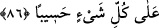

ilim ve kudret ile tamamlanır. “Allah, her şeyi gözetip karşılığını vericidir.” âyeti de
buna delâlet eder. Yâni Allah her şeyden haberdardır, her şeye gücü yeter. Buna göre
“Mukît”in mânâsı, ilim ve kudrete dayanmaktadır. Bu bakımdan Allah’ın, “el-Mukît”
olarak
vasfedilmesi,
sâdece
“el-Kâdir”
yâhut
sâdece
“el-Âlim”
olarak
vasfedilmesinden daha tamamdır. Çünkü, “el-Mukît” bu iki mânânın da Allah Teâlâ’da
bulunduğuna delâlet eder. Böylece bu isim onlarla eş anlamlı olmaktan çıkmaktadır.”
“Kim” hayır türlerinden birinin başkalarına ulaşması için “iyi bir işe aracılık ederse
onun da o işten bir nasîbi olur.” Çünkü, güzel şefaatin özelliklerinden biri de, ondan
şefâat edene de bir pay verilmesidir. İşte bu özellik sayesindedir ki, o kişi böyle güzel
bir şefaat edebilmektedir. “Kim kötü bir işe aracılık ederse onun da” yaratılışında
“ondan bir payı olur.” Yâni başkasına bir tür şer ulaştırmak demek olan bu kötülük
sebebiyle kötü bir şefâatte bulunur. Nitekim Allah Teâlâ şöyle buyurmuştur: “Güzel
memleketin bitkisi, Rabbinin izniyle çıkar; kötü olandan ise faydasız bitkiden
başka bir şey çıkmaz.” (el-A’râf 7/58) “Allah” ezelde “her şeyi gözetip karşılığını
vericidir.” Güzel şefâatte bulunanla kötü şefâatte bulunanı ilk olarak yaratırken görür;
muktedir, ilim sâhibi ve hıfzedici olduğu için de onlara güzel veyâ kötü şefâatte
bulunma istidâdını verir. Artık bugün onlar hayra yâhut şerre isti’dâdlı oluşlarını
değiştirebilmeye güç yetiremezler. Bu meseleyi çok iyi anla!
Sa’dî (k.s.) de şöyle der:
Halinin görünüşü iyi veya kötüyse de
Hepsi Cenâb-ı Allah’ın takdir eliyle işlenmiştir
86- Bir selam ile selamlandığınız zaman siz de ondan daha güzeli ile selamlayın;
yâhut aynı ile karşılık verin. Şüphesiz Allah, her şeyin hesâbını arayandır.
“Bir selam ile selamlandığınız zaman” “Tahıyye”, aslında birine yaşaması ve uzun
ömürlü olması için duâ etmek demektir. Sonra bütün duâlar için kullanılır olmuştur.
Çünkü birine hayır duâda bulunmak, bizzat yaşaması veyâ güçlenip kemâle ermesi yâhut
hayâttan beklenen gâye için duâ etmeyi de ihtivâ eder. Araplar birbirleriyle
karşılaştıkları zaman, ‘Allah sana ömür versin, ömrünü uzatsın’ mânâsında
“Hayyâkellâh” derlerdi. Bazıları ise, “bin yıl yaşa” derlerdi. Daha sonra şer’i şerif bu
kelimeyi selamda kullandı ve İslâm’ın selam biçimi oldu. Allah Teâlâ şöyle
buyurmuştur: “Allah tarafından güzel bir yaşama dileği olarak kendinize
(birbirinize) selam verin.” (en-Nûr, 24/61)
Denilir ki hristiyanların selamlaşma biçimi, eli ağzına koymak; yahûdîlerin